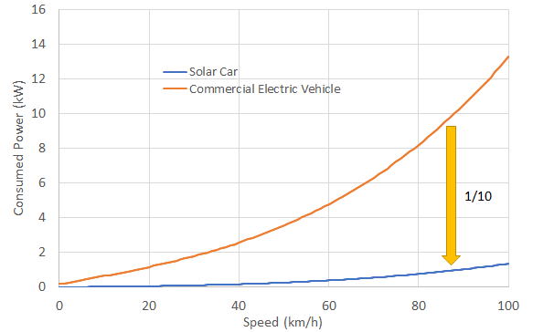
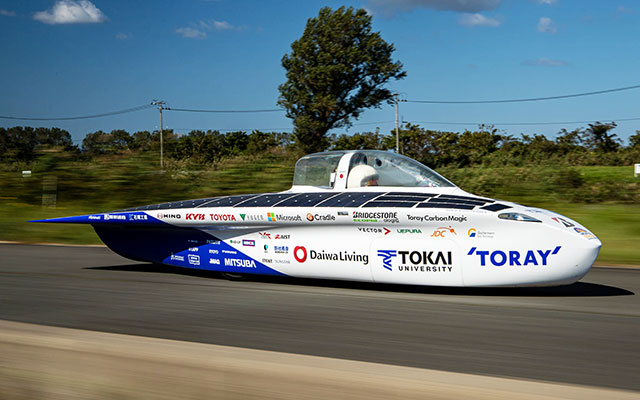
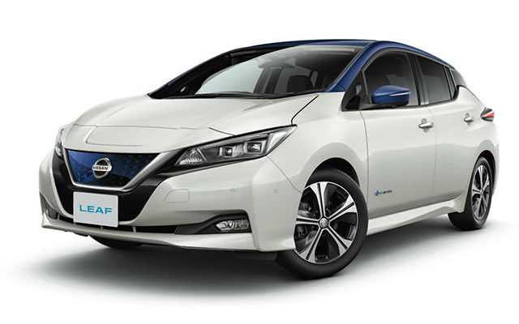
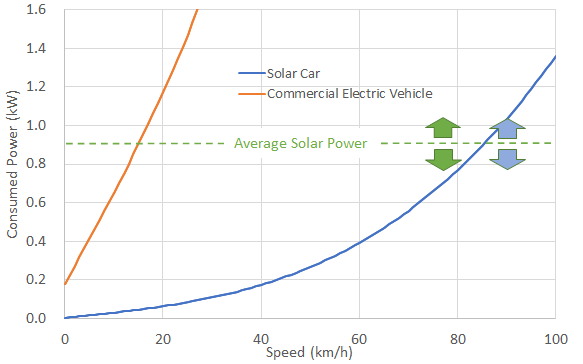
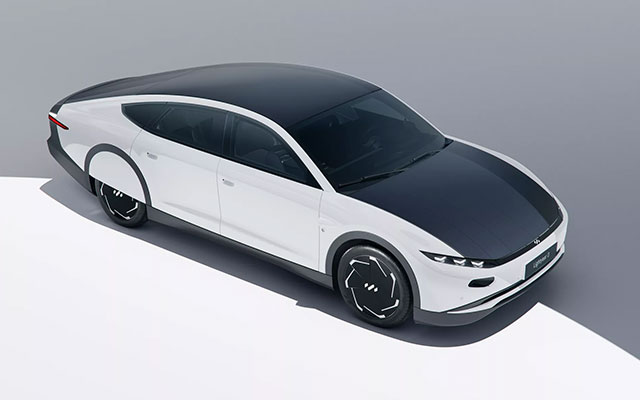

Is it possible to commercialize solar cars?
09/16 2022
Author: Hideki Kimura
Fossil fuels such as oil and LNG are becoming more expensive. From the perspective of the SDGs, the use of renewable energy with low CO2 emissions and energy-efficient vehicles will be necessary in the future. The solar car is the ultimate vehicle that can run using the PV energy, contributing to the realization of a sustainable society.
Do you think solar cars are still a long way off? Indeed, it was once thought to be impossible. However, with the development of various technologies, including solar cells, batteries, motors, inverters, tires, materials, and aerodynamics, commercial solar car is almost there. A comparison of the power consumption vs. speed of a solar car and commercial electric vehicle running on flat ground is shown in the following chart. Here, the solar car is a 2019 model of the Tokai Challenger, and the commercial EV are an estimated Nissan Leaf and Tesla Model 3.



This figure shows that the Tokai Challenger can run on about one-tenth of the power consumption of commercial electric vehicles. Tokai Challenger can run at about 0.8 kW at 80 km/h, which is equivalent to about 1 PS or 1 HP. Considering the environmental impact, this power is an appropriate value to carry one person. In other words, modern cars are too and too heavy.
Next, let us focus on the consumed power of the Tokai Challenger. The rated output of PV panels is 940W, which can reach a cruising speed of over 80 km/h. For example, in the central area of the Australian continent, it can generate about 7 hours of solar power per day. That is, it can travel at a speed of 85 km/h x 7 hours = 600 km.

If a commercial EV is driven, it needs 10 times more power than our solar car. In other words, 0.7h = 42min, which is equivalent to 1/10 of 7 hours, is enough time to run a commercial EV. Roughly, a commercial EV can be powered by solar energy for a range of 60 km per day. In November 2022, an automotive venture in EU will launch a new electric vehicle with 5m2 solar panels called "Lightyear 0" to the world. Lightweight materials of aluminum and carbon fiber, and improved aerodynamics, the car can travel 70 km using solar energy generated in a day. Although the price is very expensive, about 300,000 euros = 36 million yen, the solar car has just been made practical by the latest technology.

References
1) Press Release of Nissan Leaf.
2) WEB site of Lightyear.